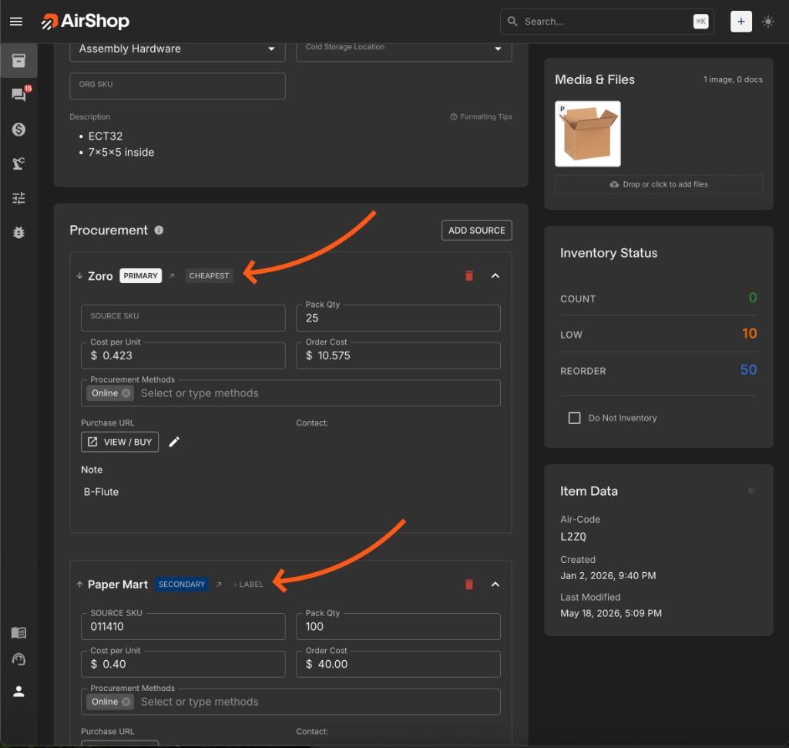
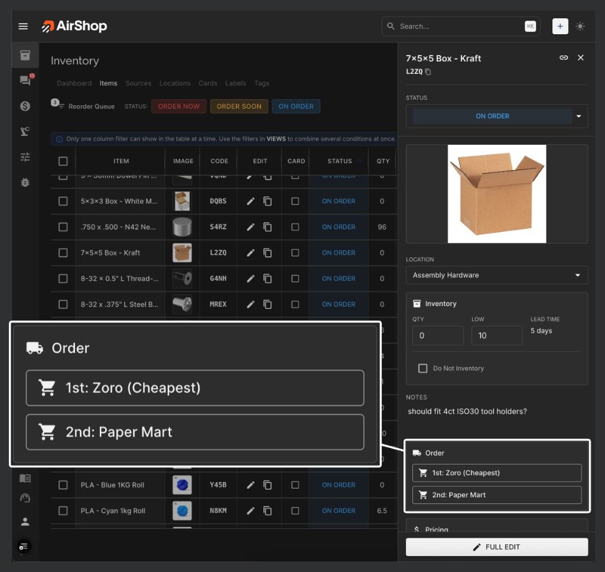

When an item has more than one vendor, it helps to know why each one is there and to place an order without digging through the full item page. This update adds vendor labels on Item detail, an Order section when you open an item from inventory, and a # column on Source detail, all built on the vendor order you already configure per item.
Vendor labels on Item detail
The main change is on the Inventory Item Detail page. In the Procurement section, each vendor row can have optional labels. Pick presets such as Primary, Cheapest, or Secondary, or type any short custom label.
Open any item from the inventory items list to add or edit labels.
Those labels sit next to the vendor name, where they are easiest to scan while looking at the item’s sources. They also carry into the call-to-order window and copy-to-clipboard order details.

Order without opening the full item
From the inventory items list, open an item and use the new Order section when sources have procurement set up.
- Buttons follow your existing vendor order on the item, for example
1st: Zoro (Cheapest)and2nd: Paper Martwhen labels are set. - Each button uses that vendor’s first procurement method: call to order opens the phone window, online with a URL opens the purchase page, and email PO or local pickup jumps to that vendor on the full item page.

Priority column on Source detail
On Sources, open a source, then Source Items. The # column shows how that source ranks on each linked item: 1st, 2nd, 3rd, and so on, the same ordinals you see on the item.
Use it to scan whether this vendor is usually the first choice or a backup across your catalog.